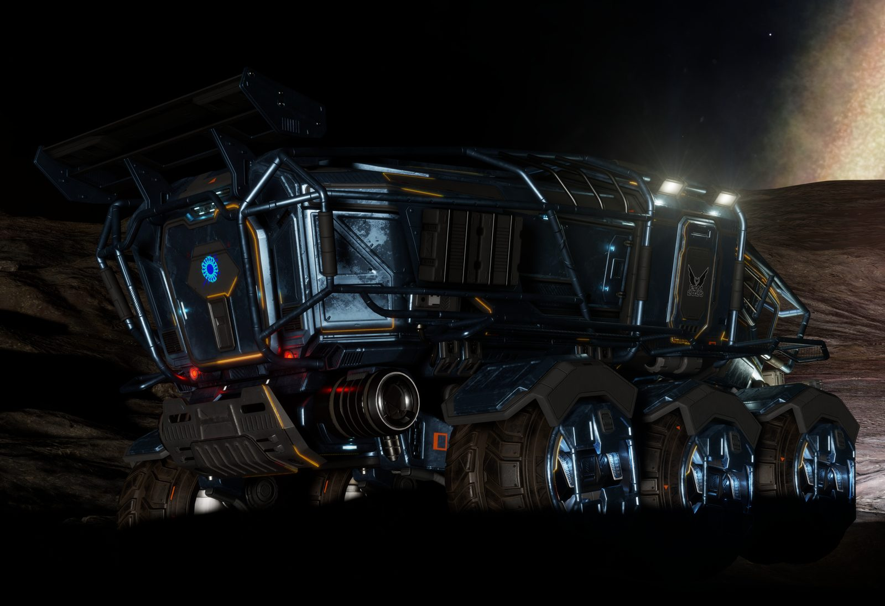
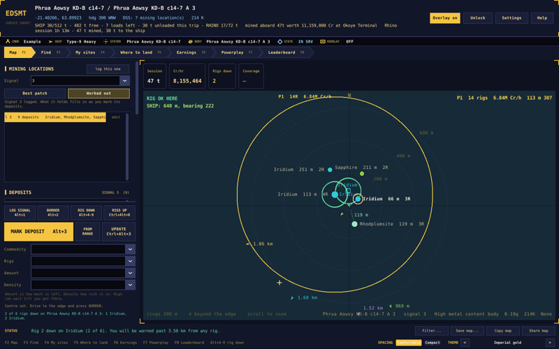
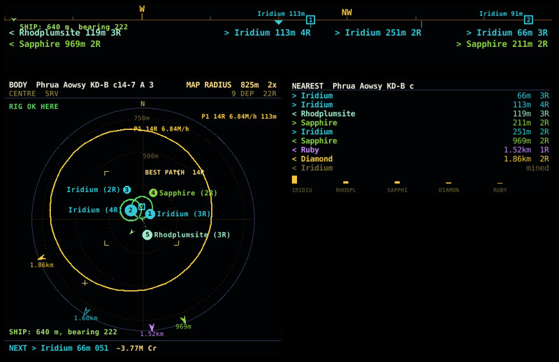
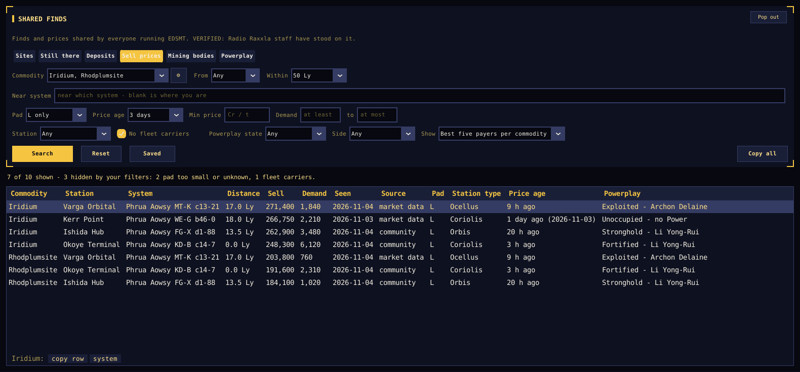
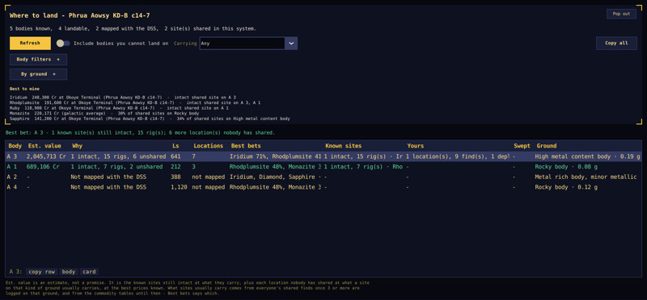
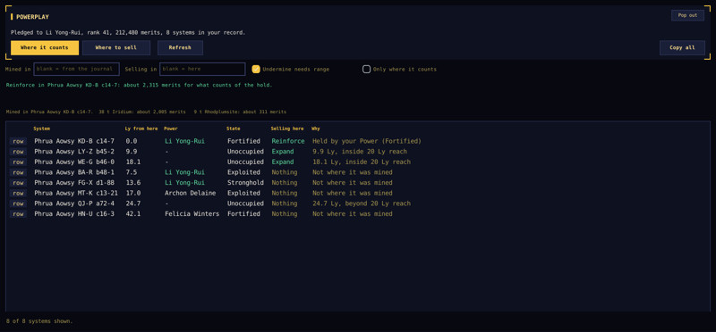
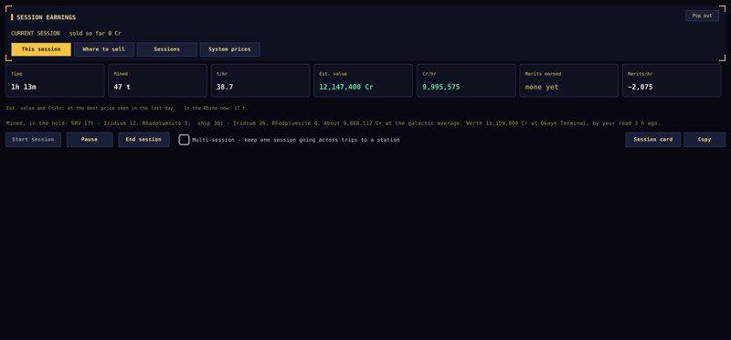

EDSMT
Elite Dangerous Surface Mining Tool
A surface mining companion for the Rhino. It reads your Elite Dangerous journal, so the system, the body, your position and what you mined all come from the game — you never type a coordinate.
Free · Windows and Linux · No account · GPL-3.0
Build 1.10040 Elite Dangerous 4.4.2.0 What changed Source: github.com/TheAnnouncer/EDSMT

What it does

Map and rigs
Every deposit you mark, where it is, with the trail you drove and a ring round each rig.

Overlay
A compass tape, a scope and a targets list over the game, so you can drive without leaving it.

Find and selling
Shared sites from other commanders, and where what you mined sells, nearest first.

Where to land
The bodies in the system you are in, ranked by what they are likely to hold.

Powerplay
Whether selling in each system would count for your Power, from your own journal.

Earnings and Discord
The session you are on, with Cr/hr and merits/hr, and a summary for your own Discord channel.
Map and rigs
Drive into a mining location and press a key. EDSMT takes your position from the game the moment you press it, so a deposit records where it is; how far it is and which way to turn are worked out live from wherever you are.
None of these is used by the game's own control schemes. Every one can be changed in Settings.
On the map
- The trail you drove, so you can see the ground you have covered.
- Golden groups: deposits close enough to work in one stop, ringed, with an estimate of what they are worth an hour.
- Rig radar: a ring the rig spacing round every rig you put down, and where the next one fits.
- Density and amount kept apart: how rich a deposit is, and how much of it is left.

The overlay
Boxes over the game, each switched on or off on its own: a compass tape with every recorded deposit, its distance and how many rigs it takes; a scope that zooms 1x, 2x and 4x on a key; the nearest targets; a status line; and a guide that shows the next step and its key. Anything behind you stays pinned to the edge of the tape with a turn arrow rather than dropping off it.
Unlock to drag the boxes where you want them and set the text size of each; lock again and clicks go straight through to the game.
No overlay can draw over a game in exclusive fullscreen. That is DirectX, not EDSMT.

Find and selling
Find searches the community map: sites ranked by rigs, by how many commodities share a patch, and by how recently somebody stood on them, with the distance in light years on every row.
Sell prices answers where it sells, nearest first, for every commodity you tick. Each price says how old it is and where it came from — your own read of a market, another EDSMT user's, or market data — and a price more than a day old is marked stale rather than shown as current.
Filters for pad size, price age, demand, minimum price, station type, fleet carriers and Powerplay state, and saved searches. The count line says how many rows each filter hid, and why.

Where to land
Every body in the system you are in, ranked: the known sites still intact, the mining locations your DSS found that nobody has shared, and what that kind of ground usually carries. Bodies you map while it is open appear without a click, and your older journals are read once so a system you scanned last month is remembered.
The estimated value is an estimate, not a promise, and the window says what it is based on.

Powerplay
EDSMT reads your pledge and the Powerplay state of every system your journal has been in. For the cargo you mined, it shows what selling in each system would do — Expand, Reinforce, Undermine or nothing — and why, with the ranges measured from your own record.
It warns when part of the hold will not count, such as cargo that was bought or went through a fleet carrier, and gives an estimate of the merits the hold should earn. A second page lists the best payers and nearest buyers for what is aboard, with what selling there does for your Power.

Earnings and the Discord summary
A session starts with your first rig down or the first tonne the Rhino refines, and ends when the last rig is up or the Rhino is back aboard. Pause stops the clock for a break or the drive to a station.
The current session shows its time, tonnes, t/hr, what it is worth at the best credible price, Cr/hr and an estimate of Powerplay merits an hour. Both holds are priced, and the table under it keeps every session before, with what was mined, sold and where.
Only what the Rhino dug up is counted. Cargo you bought or hauled is left out.

Your own Discord channel
Paste a channel's webhook in Settings and EDSMT posts a summary of each Rhino session there — tonnes of each commodity, time, t/hr, credits, Cr/hr and where you sold — with the map picture it saves when the Rhino docks. Finds can go there too, if you want them. Send a test message checks the address first.
The picture is also saved on your PC, and Copy map puts it on the clipboard to paste anywhere.
Community sites
Every deposit you mark goes on the community map, and everyone else's comes back to you under Find and on your own map. A map only some people can see never gets filled in.
Surface deposits do not last the way ring hotspots do — Frontier have said they regenerate at a very slow rate — so age is part of the ranking. A site nobody has seen for two months ranks below a smaller one confirmed last week.
Verified means somebody from Radio Raxxla has driven to it and confirmed it. Reported is any commander's find — just as welcome, and most of the map. The app cannot mark its own finds verified, and a verified site still ages like any other.
When your rigs come up, how you laid them out is shared too, and on a deposit with no plan of your own the layout other commanders used shows as pins on the scope.
Go back to a worked-out deposit and find it full, and the map learns how long it took to come back. Every depleted deposit then says what those reports measured.
Live from the community map · Leaderboard (weekly, monthly, Powerplay merits) — everyone who shares a find is on it; Leave in the app takes you off.
This week on the map
The weekly numbers — new sites, commanders, the top of the board and the Powers — are on the weekly update page.
Every find shared from EDSMT is posted to #edsmt-finds on the Radio Raxxla Discord, a few minutes after it is made, with the finder's CMDR name. The weekly update goes to #edsmt-weekly after each Thursday tick.
Privacy
- Your journal is read on your own PC. EDSMT reads the files the game writes for tools like this one. It never reads the game's memory and never presses a key in the game.
- No account, no sign-up, no Frontier login.
- Your notes, sessions and settings stay on your PC, in
%LOCALAPPDATA%\RadioRaxxla\EDSMT.
- What goes on the community map: the deposits you mark — system, body, commodity, position, rigs and how rich — and the prices at markets you open.
- Every find carries your CMDR name, so the leaderboard and the credit for a find are always right.
- Inara and Discord send nothing until you switch them on and add your own key or webhook.
- It is GPL-3.0. The source is on GitHub, so you can read what it sends and when.
Install and system requirements
EDSMT-Setup.exe is a normal installer: a Start menu entry under Radio Raxxla, an optional desktop shortcut and an entry in Add/Remove Programs. It installs for you only, so it never asks for admin. EDSMT.exe is the same program as one portable file.
EDSMT tells you when there is a new version and installs it on one click, after making a backup of your finds and settings.
On Linux, for Elite played through Proton, Lutris,
Heroic or Bottles: EDSMT-linux-x86_64.tar.gz from the
release page
— unpack it and run ./EDSMT — or bash RUN.sh
from the source. It finds the game's journal in whichever Wine prefix you
played in last.
Cloud gaming works where you get a desktop of your own that runs Elite: a cloud Windows PC, or a cloud Linux desktop such as Maximum Settings with the Linux build. Services that stream only the game, such as GeForce NOW, cannot run a companion program beside it.
"Windows protected your PC" — the build is not code signed. More info → Run anyway. The source is here if you would rather read it first.
What changed
New — a welcome window
- A welcome window on the first start of each new version: **CHECK THE SETTINGS** with a button straight to them, what is new in this version, Join the Discord, radioraxxla.com and Sign in to the site (a member page for any commander, in the squadron or not), a picture of how it works, the community map, the useful links (user guide, report a bug, changelog, the tour) and a Donate with PayPal button to support Radio Raxxla. Don't show this again keeps it shut until the next version; Help on the top bar and Welcome again in Settings → About open it any time. It replaces the first-run notice and says the same thing about the community map. ### New — the wing link: linked from your in-game wing, one shared survey, pins split
- Linked with your wing in the game, no code to type. Settings → Rigs → Wing link, Link with my in-game wing by itself (on to begin with): in a wing in the game, you are linked with each wingmate who runs EDSMT and has you in their wing too — never with anyone who does not. Leaving the wing in the game ends it at once. A typed wing code still works as before, beside it.
- One shared survey. Over the wing link go the ground your scanner has swept on the body, the finds you have marked there and your rig plan's pins. The map and the scope show each wingmate's Rhino, rigs, swept ground and finds in a colour of their own, a find a wingmate marks is said as it comes in, with how far and which way, and the swept figure and the gaps count the ground the wing has swept with yours. Nothing is stored: you drop out two minutes after your last update.
- Rig plan pins split between the wing. On a deposit with a rig plan, the pins are divided between the wingmates working it, in turn by name: yours are as always and you are guided to your own, theirs are dashed, in their colour, with their initial. With no plan of your own the wing's is followed — the one with the most pins. **Split the rig plan's pins between the wing** turns it off.
New — the session on a stream
- An OBS browser source, Settings → Overlay → Streaming: switch on Serve an OBS browser source on this PC and EDSMT serves your Rhino session as a page for an OBS Browser Source — body and system, tonnes by commodity, Cr/hr, merits, rigs down, the nearest deposit with its distance and bearing, and the session clock, in the app theme's colours on a clear background. It is served on this PC only (127.0.0.1, port 8765 unless you pick another) and loads nothing from anywhere else. **Copy overlay address** puts the address on the clipboard to paste into OBS. Off until you turn it on.
- A viewer card on the same page server, for a corner of the stream or a Twitch panel picture: your CMDR name, what you are mining and where, the session's tonnes, Cr/hr and your last find. Copy viewer card address copies it. No Twitch account or key is needed.
- Streamer mode covers both: while it hides the system and body names on screen, the overlay page and the viewer card read "a system N Ly from Sol" and "a body" too. Neither ever shows a position on the body or anything about you beyond your CMDR name.
- A session card: Session card on Earnings → This session, or card on any row of Sessions, makes one picture of the session — CMDR, body, system, date, tonnes by commodity, credits, Cr/hr, merits and time mined, with the session's map beside them — in the pictures folder. The OBS page shows the latest as /card.png.
- The card on Discord: each of your webhooks has a new Session card switch, off to start with, that sends the card with the session summary. Webhooks you already have keep posting what they posted.
- The Streamer layout reads on a stream: applying it now takes its boxes' text to at least 130%, so nothing on a 1080p capture is smaller than 10 pt. A size you set bigger is kept.
- Text shadow for streaming, Settings → Overlay → Streaming: a dark outline behind every word on the overlay boxes, so they read over bright ground on a stream. Off to start with.
- Settings → Sharing → Discord: each webhook's Test and Remove buttons are on a line of their own under its switches.
New — Voice Mode, spoken directions, the proximity sonar and a VoiceAttack profile
- Voice Mode. Settings → Basics → Voice, Voice Mode (off to begin with): EDSMT says what it just did — signal logged, border set, deposit recorded or not, rig three down, all rigs recovered, the rig range warning, update ready, backup complete, the session starting, pausing, resuming and ending, a rig plan traced, ready and on the pin, half the survey area swept and all of it, a high-gravity world, the wing link up, a wingmate joining, leaving or crowding your rig, a chat command not understood. The words are the Basic voice line pack, in one of three voices — Ship computer, Flight controller or **Radio Raxxla on-air — with a Speaking rate and a Test voice** button. Ship computer comes recorded — every line, made for EDSMT and shipped with it. The other two voices are read by Windows' own speech, through one process for the whole run that closes with EDSMT, until their recordings follow. A recording (
voice\<voice>\<line>.wavbeside EDSMT or in the data folder) is always played in place of the spoken line. Windows only. - Spoken directions, for a headset. Spoken directions says how far and which way, on a clock face — "Platinum, 340 metres, two o'clock" — to the rig plan's next pin, the guided survey's waypoint, the deposit the scope points at, or the nearest rig: at once when it changes, every 10 seconds while you drive (5 to 60 in Settings), never more than one line every 3 seconds. Windows only.
- Proximity sonar. Proximity sonar: in the Rhino, a short tone that repeats faster and higher as the deposit the scope points at gets nearer — every 2 seconds at 1,500 m, five a second inside 25 m, nothing past 2 km. Tones only, no words. Windows only.
- A VoiceAttack profile. Settings → Keys, **Make a VoiceAttack profile** writes Radio Raxxla EDSMT.vap into the data folder and says where: "mark signal", "set border", "mark deposit", "rig one down" to "rig six down", "rigs up", "update deposit", "next waypoint", "overlay" and "lock overlay", each pressing the key bound to it on the Keys page. In VoiceAttack, Import Profile and pick it. See docs/VOICEATTACK.md.
New — faster tables, a journal read off the window's thread, the journal's own checks
- The big tables are a tree view. Find, Sessions (and System prices), My sites (and its bin) and Where to land hold every row at once and draw only the rows on screen: 2,000 rows draw in 0.06 s, where the old label grid took 3.1 s for 300. No more "Show more". Headings sort, rows are coloured by their cells (green good, amber caution), a short cell such as Why shows its whole sentence when the mouse rests on it, and Copy takes it whole. Click a row to pick it — its buttons are on the line under the table; Ctrl or Shift picks several, Ctrl+C copies them, a double-click does the first thing on the line and a right-click lists them all. The small fixed tables (Where to sell, Powerplay, the leaderboard) are as they were.
- The first read of a long journal no longer stops the window. A journal of 8 MB or more is read from the top 4 MB at a time on a thread of its own, with progress on the status line; the window is never still for more than a few hundredths of a second meanwhile. A 500,000-line journal reads in about 2.5 s instead of 4 s, with 26 MB of memory instead of 304 MB.
- Faster reading all round. Commodity names are remembered rather than tidied afresh each time, and journal lines nothing reads (chat, music, signals) are skipped unparsed. The older journals are read a chunk at a time instead of whole. Loading and listing your own sites is about twice as fast. Before and after figures are in docs/PERFORMANCE.md.
- A session's tonnes are what crossed to the ship. The Sessions table's t/hr is from the tonnes moved across to the ship; the tonnes refined stay the live count while the Rhino is out.
- The ship's hold checks the transfers. Once the Rhino is back aboard, To ship says "hold agrees" when the ship's own hold rose by exactly what was moved across.
- Cargo thrown out is counted. Ore of the session's own thrown out while it is open shows under Mined as tonnes thrown out.
- The game's own count at each login. The line under the Sessions table puts the game's mining figures between your last two logins beside the sessions EDSMT has for that time.
- What is in the Rhino now. This session says what the Rhino holds, from the count the game writes with every tonne.
- The price after your sale. Sold at gives how the price had moved by your next read of that market, with the price before the sale and the next one in the cell's note and in Copy.
- Trace mode, for support. A setting, off by default: during a Rhino session, a line for each change the game writes to Status.json and Cargo.json — the time, the flags and the cargo counts, nothing else — goes into the support bundle.
New — streamer mode, several Discord channels, a backdrop for bright planets, the main window
- Streamer mode, Settings → Sharing: system and body names on the overlay, the map's title, the status line and the readouts read "a system N Ly from Sol" and "a body" until you have been in a system for the delay you pick (0 to 30 minutes), and your own Discord posts wait the same delay. A STREAMER badge shows while it is on, and Bigger text takes the overlay's text two sizes up. Finds still reach the community map at once.
- Several Discord channels of your own — up to five, each with a name and its own switches for finds, session summaries and the session map, with Test and Remove on each. The one webhook you had becomes the first, named My Discord. Every find also appears on the Radio Raxxla Discord through the community map, with nothing to set up.
- A dark backdrop behind the overlay for white and icy ground: Off, Light, Medium, Strong or Solid, in Settings → Overlay. *Darker by itself on icy and rocky-ice bodies* (on for everyone) takes it to at least Medium on those bodies and leaves every other one as you set it.
- The EDSMT logo on the welcome window, in Settings → About, and as the window's icon on the title bar and the taskbar.
- A status strip under the top bar: CMDR, ship, system, body, whether you are docked, landed, in the SRV, on foot or in flight, and whether the overlay is up.
- The tools are a strip of tabs under it — Map, Find, My sites, Where to land, Earnings, Powerplay, Leaderboard — with F2 to F8 to open them from the keyboard. The top bar keeps the room for where you are.
- Four figures over the map: the session's tonnes, Cr/hr, the rigs down and how much of the survey area is swept.
- Along the bottom: the keys, SPACING — Comfortable or Compact, changed at once — and the THEME with < and > to step through every theme.
- Overlay uses the app theme, a switch on Settings → Theme: the overlay wears whatever the app wears and changes as soon as it is saved, with its own picker greyed out while it is on. On for a new install; an older settings file keeps the overlay it had.
- A launcher can see EDSMT is running: a small file in the Radio Raxxla folder of your user data says which version is open, and goes when EDSMT closes. Nothing about you is in it.
Changed
- A site can take twelve rigs. The rig count recorded against a deposit now goes to 12 — two Rhinos' worth — on the rail, in the deposit editor, in chat tags and in imports (asked on the Discord). The Rhino itself is unchanged: six rigs, the rig keys 1 to 6, "rigs full" at the sixth; a wing's second Rhino still takes 7 to 12.
- A key of its own: each copy of EDSMT asks the community map once for its own key and sends it with every request, kept in a file of its own in the data folder and never shown.
- Signed updates: each release's version.json is signed on the build machine, and EDSMT checks the signature before it downloads a build — a checksum proves the file matches the list, the signature proves who wrote the list. An update not signed with Radio Raxxla's key is refused and the download page is offered instead.
- EDSMT has its own address: the community map, the leaderboard, the live map and the weekly report are at edsmt.radioraxxla.com. The first address still works, and EDSMT falls back to it by itself if a network cannot reach the new one yet.
- A new install starts ready to use: the overlay on, with its step-by-step guide and the deposit card; the notes on every control; chat tags and the long press for a rig on; the map's trail off; Imperial gold for the app and the overlay. An existing settings file keeps every choice it has.
Fixed
- The scope comes back once every rig is down. The rig planner's close-up stayed on while any pin was within 600 m, done or not, so with the last rig placed the scope sat zoomed on the finished pins (reported on the Discord). The close-up is for pins still to drive to.
New — Share my week
- Share my week on the Leaderboard tab: your week on the surface as a card — finds, sites, bodies, systems, best patch, furthest from Sol, your place on the week's board, merits and the ribbons earned — drawn by the community map from what you shared, saved in the pictures folder and opened, ready to post. The weekly page has it too, under Your week, and so does your member page on radioraxxla.com.
- Pairing sends your commander name (the journal's, never typed) with the code, so the member page can show your EDSMT figures under your account without a name box.
New — squadron share, off by default
- Share my squadron stats with my squadron's site, a switch of its own on Settings → Sharing, off until you turn it on and only at work once the journal has named your squadron. It fills your squadron's site from the game with four things and nothing else: your carrier's location and scheduled jumps, its buy and sell orders, your Powerplay rank and merits, and the hauling tonnage you deliver to builds. Never credits, carrier finance, what a carrier cost, your FID or anything anyone said in chat — those are never read. Sent in batches, at most once a minute.
New — mining locations to EDDN
- Send mining locations to EDDN, Settings → Sharing, on to begin with. When the FSS reports Planetary Mining Locations on a body, that body's signal counts go to EDDN, the network other Elite tools read, with your CMDR name as the uploader. Nothing else goes: no finds, no position on the body, no credits. Only what the game reports as you play — never an old journal read back — and only when the system it names is the one the game last said you were in.
New — Celestia, the main voice
- Celestia — the Celestial Event Liaison & Tactical Information Algorithm, Radio Raxxla's voice of the Void — is the first voice of the Basic voice line pack, and the one a new install uses. Her comms sound different in the ship, in the Rhino and on foot, picked from where the game says you are. The Ship computer, Flight controller and Radio Raxxla on-air stay in the list.
- Answer length for Celestia: Short, Normal or Chatty. Chatty has more than one take of many lines, a word about what the journal shows — the Rhino going out, a big sale, heat — and now and then, when nothing is going on, an aside about the galaxy.
- Voice-pack reminders. For commanders who fly by voice through a VoiceAttack voice pack, Celestia says the phrase to use when the journal shows the moment — "Deploy the SRV" after landing, "Recall the ship" when every rig is up, and so on — and stays quiet when it is already done. On by itself when VoiceAttack has a voice pack; one switch in Settings.
New — Rich Presence
- Your Rhino session on your Discord profile: "Playing EDSMT", what you are mining, Cr/hr and rigs down, through the Discord app on your PC. Settings → Discord, off to start with; streamer mode keeps the body and system off it. Until it is ready at our end, the switch says it is not available yet.
New — your session as data for other tools
- /state.json, on the streaming server on this PC, now carries a schema number and EDSMT's version, and every field is written up in docs/LOCAL-DATA.md — for a Stream Deck button, a dashboard or your own overlay. Read-only, this PC only, no position on a body.
New — the planning circle
- Right-click the map: Planning circle here (4.5 km). Rig and drive inside the ring and no rig is left far enough behind for the game to take it. It stays put as you drive, shows on the map and the scope with the room left to its edge, and clears from the same menu. Recentre is still the first thing on the right-click.
New — one signal as a CSV file
- Export CSV in a signal's edit window saves everything about that signal in one file: where it was logged, the survey centre and border, its deposits, each traced deposit edge with its rig pins, and the drive. One row per thing, the first column saying which.
New — best to mine, good and bad marks, your own marker colour, the materials the lists offer
- Best to mine in Where to land, above the body table: the five commodities worth most in the system, each with the best price known near here, the bodies with an intact shared site carrying it, and the ground odds.
- A Value column on Find's Sites table: what each site is worth at the best prices known. One click sorts the most valuable first.
- By ground in Where to land, shut to begin with: each kind of ground in the system with the share of shared sites on it that carried each commodity. One ground open at a time.
- Good and bad marks on a shared site — in My sites, on Find's Sites and Still there rows, and under the shared finds of the location you are in. One mark per commander per site, changed whenever you like; yours shows lit, with the community's counts beside it. Marks count towards how far the community map trusts a site. Made with no connection, a mark is kept and sent when there is one.
- The location line names the finds in the location you are in most valuable first, and so does the overlay's STATUS box.
- You on the map and the scope — in the Rhino or the ship — are drawn in a colour of your own: a cyan on every theme, or any colour picked on Settings → Theme.
- The ship minimap: below 10 km over a body with finds on the map, the scope comes up by itself in the ship, the body's sites round you, you drawn as a ship and the range widened to suit the height. It goes as you climb away or land. Ship minimap on Settings → Overlay turns it off.
- A site card: card on a site in Find and on a body in Where to land draws the body's shared finds where they are, with the site in the middle and what the map knows under it — rigs, commodities, who found it first - saved in the pictures folder and opened. The top sites on the community map come with the same cards on radioraxxla.com and in the weekly report, without positions: where on the body each one is stays in EDSMT.
- Find's Powerplay search: a sixth search for a Powerplay goal — Reinforce, Acquire or Undermine, for your Power (read from the journal) or one you pick. One row per place to mine and place to sell: the site, its system's Power and state, the station with its pad, demand and price age, how far apart they are, and an estimate an hour. Merits an hour show as "-" until the community map has measured enough to say. A line says how fresh the Powerplay state is.
- Choose the materials the lists offer: a tick list of the thirteen and the extras decides what the commodity type-ahead and the commodity filters offer. On Settings → Basics, and on the gear beside Find's commodity filter. All of them to begin with; what the body under you carries is offered either way.
Every earlier build: the full changelog
Questions
Do I need an account, or to log in with Frontier?
No. EDSMT reads the journal files the game writes on your own PC for tools like this one. There is no account, and a Frontier login would not tell it anything about surface mining that the journal does not.
Does it touch the game?
No. It reads the game's journal and status files and draws its boxes over the top. It never reads the game's memory, never injects anything and never presses a key in the game for you.
The boxes do not show over the game.
Set Elite to borderless or windowed. Nothing can draw over exclusive fullscreen — that is DirectX, not EDSMT. The boxes also show only while you are driving a Rhino.
A key does nothing.
Another program got it first — graphics-card overlays, Discord and Steam all grab keys. Pick another in Settings; EDSMT tells you when a key is taken. On UK and European keyboards AltGr is Ctrl+Alt to Windows, which is why the pick-up keys read AltGr there and Ctrl+Alt on a US keyboard.
Alt+3 will not mark the deposit.
All four boxes have to be filled in: commodity, rigs, amount and density. The scanner's density counts when the game names one. A find on the shared map needs the two things somebody deciding whether to fly there wants most.
Can I keep my finds to myself, or share them only with my squadron?
No. Every find goes on the community map for everybody, and everybody's comes back to you under Find. A map only some people can see never gets filled in. Every find carries your CMDR name, so the leaderboard and the credit for a find are always right; Leave in the Leaderboard window takes your name off the board, not off your finds.
When does an earnings session start and stop?
It starts with your first rig down, or your first tonne refined in the Rhino, or Start session. It ends when every rig is back up, when the Rhino comes back aboard, or on End session. Pause stops the clock for a break or the drive to a station.
Where do the sell prices come from?
Your own reads of the markets you open, prices other EDSMT users have read, and market data for the best price within the distance you pick. Each says which it is and how old it is; the game's galactic average is shown as an estimate until you open a market.
What are the rig planner and the wing link?
Two betas, both off until you switch them on in Settings. The rig planner: press AltGr+2, drive the deposit's edge back to where you started, and a pin goes on the scope for each rig that fits. The wing link: everyone types the same six-character code and sees each other's Rhinos and rigs on the scope. The server forgets you two minutes after you stop.
The words in the boxes are too small.
Settings has a text size for each box on its own, from 80% to 200%, without making the box itself any bigger. Unlock to drag a box or resize it by its corner.
How do I update, and do I back up first?
EDSMT tells you when there is a new version and installs it on one click. Your deposits, sessions and settings are kept, and a backup goes to Documents › EDSMT backups before it installs. Settings › Back up now makes a copy whenever you like.
Does it work on GeForce NOW?
Not the live parts. On GeForce NOW the game runs on NVIDIA's machine, so the journal and status files EDSMT reads are written there and never reach your PC. That is true of every tool that reads the journal.
Windows says it protected my PC.
A new download trips SmartScreen until enough people have run it. More info, then Run anyway. The source is here too if you would rather read it first.